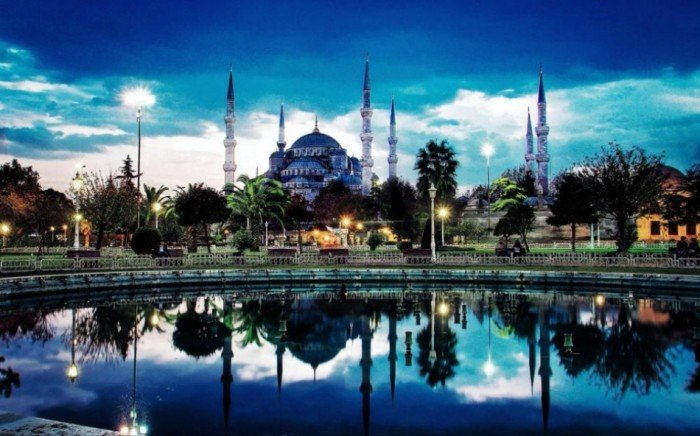

3. Прага, Чехия
В Праге старое и новое смешалось. Современная изюминка Праги — Танцующий дом. А к таинственным
готическим
замкам и площадям ведут узкие улочки, выложенные брусчаткой. Прагу называют жемчужиной Европы.

Достопримечательности Праги
- Национальный театр
- Пороховая башня
- Танцующий дом
Узнать больше о Праге
2. Пекин, Китай
История Пекина началась более 3000 лет назад. Если будешь гостить в этом древнем городе, непременно
прогуляйся Китайской Стеной и посети знаменитый императорский дворец Запретный город.

Достопримечательности Пекина
- Великая Китайская стена
- Летний дворец
- Озеро Куньминху
Узнать больше о Пекине
1. Стамбул, Турция
Стамбул объединил в себе европейское и азиатское начала, ислам и христианство. Город известен
превосходным
кофе, вкусной едой, древней архитектурой и прекрасными восточными базарами. А турецкая баня в
конце жаркого летнего дня поможет расслабиться и погрузиться в тихую, спокойную атмосферу стамбульской ночи.

Достопримечательности Стамбула
- Голубая мечеть
- Гранд базар
- Парк Эмирган
Узнать больше о Стамбуле